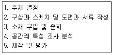
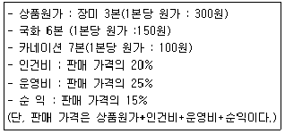

화훼장식기사 (2010-07-25 기출문제)
1과목: 화훼재료 및 형태학
1. 화훼장식을 위한 분식물 결정시 일반적인 구비조건으로 거리가 먼 것은?
- 장식의 목적과 용도에 적합해야 한다.
- 다수성이고 향기가 강해야 한다.
- 이식성이 좋고 관리가 쉬어야 한다.
- 환경적응성이 강해야 한다.
(정답률: 85%)

2. 잎의 형태별 식물의 예로 틀린 것은?
- 장상복엽-루피너스
- 우상복옆-싸리나무
- 단신복엽-귤나무류
- 단엽-남천
(정답률: 82%)
3. 두상화서(頭狀花序)인 화훼류는?
- 벼과식물
- 석죽과식물
- 국화과식물
- 천남성과식물
(정답률: 88%)
4. 조화를 이용하거나 생화를 가공함으로서 관상기간이 긴 화훼식품을 만들 수 있다. 이에 해당하지 않는 화훼장식품은?
- 실크 플라워(silk flower)
- 레이 플라워(lei flower)
- 드라이 플라워(dry flower)
- 페이퍼 플라워(paper flower)
(정답률: 79%)
5. 잔디와 맥문동 같은 지피식물로 이용하기에 가장 바람직한 식물의 형태는?
- 초지형 식물
- 표준형 식물
- 수직형 식물
- 덩굴줄기형 식물
(정답률: 100%)
6. 추식 구근류에 해당하지 않는 것은?
- Galanthus nivalis
- Colchicum autumnale
- Hippeastrum hybridum
- Hyacinthus orientalis
(정답률: 31%)
7. 꽃을 피우기 위해서 일반적으로 하루 12시간 이상의 일조시간을 요구하는 식물을 무엇이라고 하는가?
- 중성 식물
- 단일성 식물
- 장일성 식물
- 양지식물
(정답률: 96%)
8. 팬지 학명은 Viola× wittrockiana 이다. 중앙의 ×표시는 무엇을 의미하는가?
- 종간교배종이라는 뜻이다.
- Viola 와 wittrockiana를 교배하였다는 것을 표시한 것이다.
- 속간교배에 의하여 생긴 종이란 뜻이다.
- 제비꽃과 팬지 종간 교배종임을 뜻한다.
(정답률: 93%)
9. 주요 화훼류의 학명 표기로 틀린 것은?
- 카네이션 - Dianthus caryophyllus L.
- 벤자민고무나무 - Fatsia benjamina L.
- 숙근안개초 - Gypsophila paniculata L.
- 백일홍 - Zinnia elegans Jacq.
(정답률: 70%)
10. 플라스틱 화분의 특성을 설명한 것으로 틀린 것은?
- 성형가공이 용이하여 대량생산이 가능하다.
- 용기가 가벼워서 취급이 용이하다.
- 이동성이 좋고 내구성이 좋아 영구적이다.
- 용기의 통기성이 나빠서 배양토의 배합 시 통기 및 배수가 용이한 매질을 혼합하는 것이 유리하다.
(정답률: 93%)
11. 화훼류의 형태에 대한 설명으로 틀린 것은?
- 등나무는 복엽으로 되어 있다.
- 엽연(葉緣)은 잎의 가장자리 형태를 말한다.
- 엽선(葉先)은 잎끝의 형태를 말한다.
- 장미는 단엽(單葉:simple leaf)으로 되어 있다
(정답률: 92%)
12. 화훼장식에 사용하는 조명기구 중 에너지 효율성은 높지만 자외선 파장으로 인해 식물에 해를 끼칠 수있는 조명기구는?
- 수은등
- 나트륨등
- 할로겐등
- 형광등
(정답률: 73%)
13. 공중걸이(hanging basket) 장식에 가장 알맞은 식물로 나열된 것은?
- 파리지옥, 끈끈이주걱, 사라세니아
- 테이블야자, 크립탄서스, 피토니아
- 아이비, 러브체인, 녹영
- 프리뮬라, 고사리류, 구즈마니아
(정답률: 100%)
14. 화훼장식에서 인조식물의 장점으로 거리가 먼것은?
- 제작과정이 쉽고 지속적이다.
- 관리가 편하다.
- 식물과 같은 생동감을 잘 나타낼 수 있다.
- 식물이 나타낼 수 없는 다양한 색을 표현할 수 있다.
(정답률: 86%)
15. 돌벽화단(wall flower bed)에 가장 적합한 초화의 형태는?
- 키가 크고 다습에 강한 종류
- 키가 작고 아래로 늘어지는 성질을 가진 종류
- 키가 크며 원형의 모양을 갖는 것
- 잎이 넓어 시원한 느낌을 주는 것
(정답률: 86%)
16. 분지성이 강하고 위구경을 가진 복경성란에 해당되는 않는 것은?
- Cattleya Spp
- Vanda coerulea
- Cymbidium hybrida
- Dendrobium Spp
(정답률: 65%)
17. 춘파 일년초에 해당하지 않는 것은?
- Primula obconica
- Pharbitis nil
- Tagetes erecta
- Portulaca grandiflora
(정답률: 50%)
18. 소재를 세워 말리지 않고 자연건조로서 그늘진곳에 눕혀 놓듯이 두어 말리는 식물로 가장 적당한 것은?
- 스타티스
- 수국
- 숙근안개초
- 수수
(정답률: 93%)
19. 디시가든에 가장 알맞은 용기의 형태는?
- 깊고 좁은 형태의 용기
- 깊고 넓은 형태의 용기
- 얕고 좁은 형태의 용기
- 얕고 넓은 형태의 용기
(정답률: 93%)
20. 꽃의 형태별 용도가 잘못 연결된 것은?
- 라인 플라워 - 금어초, 리아트리스
- 폼 플라워 - 스토크, 델피니움
- 매스 플라워 - 카네이션, 데이지
- 필러 플라워 - 숙근안개초, 스타티스
(정답률: 75%)
2과목: 화훼품질유지 및 관리론
21. 토양의 pH가 2.0 - 4.0일 때 나타나는 현상이 아닌 것은?
- 칼슘과 마그네슈의 흡수가 감소한다.
- 알루미늄과 망간의 흡수가 증가한다.
- 수국의 꽃 색깔이 청색으로 변한다.
- 미생물의 활성이 높아진다.
(정답률: 82%)
22. 식물의 호흡작용 과정으로 옳은 것은?
- 해당작용 → 아세틸CoA형성 → TCA회로→ 전자전달경로
- 해당작용 → TCA회로 → 아세틸CoA형성→ 전자전달경로
- TCA회로 → 아세틸CoA형성 → 해당작용→ 전자전달경로
- TCA회로 → 해당작용 → 아세틸CoA형성→ 전자전달경로
(정답률: 42%)
23. 다음 중 에틸렌에 가장 민감한 관엽식물은?
- 테이블야자
- 코르딜리네
- 스킨답서스
- 포인세티아
(정답률: 67%)
24. 수확 후 과도한 꽃대의 신장이 일어나 품질이 저해되는 절화는?
- 튤립
- 장미
- 글라디올러스
- 상사화
(정답률: 70%)
25. 절화의 저온수송의 이점(利點)에 관한 설명으로 옳은 것은?
- 꽃봉오리의 개화와 꽃의 노화 촉진
- 저온으로 촉진되는 호흡 방열을 감소시켜 꽃의 저온장해현상 방지
- 꽃의 에틸렌 생성의 감소
- 줄기, 잎, 그리고 꽃잎 내의 저장 영양분과 다른 물질들의 분해 촉진
(정답률: 71%)
26. 절화의 수확적기에 대한 설명으로 틀린 것은?
- 수확적기를 정하는 고려사항에는 소비자의 기호도 포함된다.
- 수확을 아침에 하는 이유는 식물체내 수분이 가장 적기 때문이다.
- 한낮의 수확은 고온으로 인하여 절화수명이 짧아지므로 피하는 것이 좋다.
- 저녁에 수확을 하는 이유는 저장양분이 가장 많기 때문이다.
(정답률: 67%)
27. 일반적으로 온도의 영향은 적게 받으면서 단일 조건에서 화아분화가 이루어지는 화훼류는?
- 튤립
- 국화
- 장미
- 수국
(정답률: 84%)
28. 재배작형헤 대한 설명으로 틀린 것은?
- 국화의 촉성배배를 위해서는 고랭지 육묘가 효과적이다.
- 튤립은 5-6월 사이에 꽃이 피도록 촉성재배를 할 수 있다.
- 칼랑코에는 촉성재배를 위하여 9-10시간의 일장으로 3주 처리하면 화아가 유도된다.
- 아잘레아는 촉성재배를 위해서 삽목 후 가을의 단일처리를 받게 한 후 저온을 거쳐서 출하시기 1-2개월전 15-20℃ 온실로 옮긴다.
(정답률: 50%)
29. 일반적인 화훼재배에 적합한 토망구조 개선 방법이 아닌 것은?
- 경운하여 토양의 통기성을 개선한다.
- 객토를 한다.
- 석회를 주어 pH를 5-7정도로 맞춘다.
- 토양부식을 낮춘다.
(정답률: 72%)
30. 화분 속에 염류가 축적되지 않도록 관리하는 방법으로 틀린 것은?
- 화분의 밑바닥으로부터 양액을 공급하는 저면관수 방식을 이용한다.
- 비료는 가능한 완효성 및 물에 잘 녹은 것을 사용한다.
- 주기적으로 관수하는 것이 염류축적을 방지할 수 있다.
- 축적된 염분을 용탈시켜 주기위해 충분히 관수 한다.
(정답률: 86%)
31. 상대습도 요구성에 따른 관엽식불 분류군 중 저습군(50%이하)에 속하는 식물은?
- 세네시오
- 필레아
- 피토니아
- 에피시아
(정답률: 62%)
32. 화아분화에 대한 설명으로 옳은 것은?
- 생식생장에서 영양생장으로의 형태적 전환이 일어난다.
- 화아분화되면 경정분열조직은 엽원기를 형성한다.
- 화기는 암술, 수술, 꽃잎, 꽃받침 순으로 분화한다.
- 경정분열조직의 비대가 일어난다.
(정답률: 64%)
33. 식물의 내적균형을 나타내는 C/N율에 대한 설명으로 틀린 것은?
- C/N율은 탄소와 질소의 비율을 나타낸다.
- C/N율이 높으면 생식생장이 증가한다.
- C/N율이 낮으면 생식생장 증가로 개화가 빨라진다.
- 선단부는 탄수화물보다 질소의 함량이 높아 낮은 C/N율을 보인다.
(정답률: 67%)
34. 100mM 농도의 STS 용액을 갖고 0.2mM STS 1L 용액을 만들려고 한다. 100mM 농도의 STS 용액이 몇 mL 필요한가?
- 0.2mL
- 0.5mL
- 2mL
- 5mL
(정답률: 30%)
35. 절화의 습식저장에 대한 설명으로 틀린 것은?
- 습식저장은 건식저장보다 절화의 유지온도가 높기 때문에 절화가 가지고 있는 저장양분의 소모가 빠르다.
- 습식저장은 꽃봉오리의 발육과 절화의 노화과정이 건식저장에 비해 빠르므로 단기간 저장에 적합하다.
- 습식저장은 저온보다는 고온으로 저장하는 것이 좋다.
- 잿빛곰팡이병에 민감한 절화는 습식저장시 살균제를 처리하여야 한다.
(정답률: 알수없음)
36. 수확 후 눕혀놓으면 꽃대가 휘므로 반드시 세워서 수송, 저장하여야 하는 절화는?
- 금어초
- 안개초
- 국화
- 스타티스
(정답률: 75%)
37. STS 용액은 AgNO3와 Na2S2O3ㆍ5H2O를 물농도 1:4의 비율로 각각 만들어 동량 혼합하여 사용한다 1mM STS 용액을 만드는 방법의 설명으로 옳은 것은? (단, AgNO3 분자량=170 Na2S2O3ㆍ5H2O 분자량=248)
- AgNO3170mg을 증류수 1L에 녹이고, 또 Na2S2O3ㆍ 5H2O 992mg을 1L의 증류수에 각각 녹인 후 Na2S2O3ㆍ5H2O용액 1L에 AgNO3 용액 1L를 서서히 부어 초자봉으로 저으면서 혼합한다.
- AgNO3170mg을 수돗물 1L에 녹이고, 또 Na2S2O3ㆍ5H2O 992mg을 1L의 수돗물에 각각 녹인 후 Na2S2O3ㆍ5H2O용액 1L에 AgNO3 용액 1L를 서서히 부어 초자봉으로 저으면서 혼합한다.
- AgNO3340mg을 증류수 1L에 녹이고, 또 Na2S2O3ㆍ5H2O 1984mg을 1L의 증류수에 각각 녹인 후 Na2S2O3ㆍ5H2O용액 1L에 AgNO3 용액 1L를 서서히 부어 초자봉으로 저으면서 혼합한다.
- AgNO3340mg을 수돗물 1L에 녹이고, 또 Na2S2O3ㆍ5H2O 1984mg을 1L의 수돗물에 각각 녹인 후 Na2S2O3ㆍ5H2O용액 1L에 AgNO3 용액 1L를 서서히 부어 초자봉으로 저으면서 혼합한다.
(정답률: 82%)
38. 절화의 수명을 연장시키기 위한 방법으로 옳은 것은?
- 실내온도는 낮게, 상대습도는 70-80%로 높게 한다.
- 광도를 높이고, 상대습도를 낮게 한다.
- 통풍이 잘되고, 광선이 강하게 들어오는 곳에 둔다.
- 통풍이 잘되고, 온도가 높은 곳에 둔다.
(정답률: 85%)
39. 절화의 종류별 수확적기(최적 발육단계)의 연결로 틀린 것은?
- 달리아 - 꽃이 충분히 개화했을 때
- 독일붓꽃 - 꽃이 충분히 개화했을 때
- 튤립 - 봉오리 색이 반쯤 보일 때
- 프리지아 - 첫 봉오리가 피기 시작할 때
(정답률: 82%)
40. 절화의 수송과 저장에 관한 설명으로 틀린 것은?
- 국내에서는 도매상에서 소매화원까지 비교적 짧은 시간동안 수송되므로, 일반적으로 수송 과정중 온도조절이나 광선조절은 하지 않는다
- 포장을 푼 후 줄기의 하엽과 손상을 입은 부위를 제거하고 줄기는 자르지 않고 물에 담근다.
- 물에 잠긴 줄기부분은 쉽게 부패하므로 물에 잠길 부위의 잎은 제거한다.
- 물은 자주 잘아주고 줄기 끝은 다시 자른다.
(정답률: 89%)
3과목: 화훼장식학
41. 상업공간 장식(디스플레이)에 대한 설명으로 가장 적합 것은?
- 상품의 이미지 전달과 홍보를 위한 장식효과를 고려하는 것이 필수적이다.
- 디자이너의 강한 의도가 표현되어야 한다.
- 상품의 지속적인 홍보를 위하여 계절에 따라 변화를 주는 것은 홍보효과에 혼돈을 줄 수있다.
- 다양한 공간에서 이루어지므로 장식공간의 특성 및 구조 보다는 상품진열대의 장식에 특히 신경을 써야 한다.
(정답률: 77%)
42. 절화장식을 의뢰받은 경우 요구되는 도면에 관한 것이다. 1:4로 축도된 도면상에 작품의 높이가 20㎝ 였을 경우, 실제 높이는?
- 50㎝
- 80㎝
- 500㎝
- 800㎝
(정답률: 67%)
43. 화훼장식을 위한 작업시설에 해당되지 않는 것은?
- 작업대
- 철사
- 보관대
- 냉장부스
(정답률: 65%)
44. 우리나라 화훼장식의 자료가 되는 유물에 나타난 화훼장식 중에서 나머지와 다른 시대의 유물은?
- 안악 2호분 현실동벽의 연꽃꽂이
- 강서대묘 현실천정 비천상의 산화
- 석굴암 십일면 관음상의 병화
- 쌍영총 주실벽화의 공화
(정답률: 73%)
45. 자연 속의 아름다운 곡선을 모방한 선으로 구성되지 않은 것은?
- 초승달형(crescent)
- L자형(L shape)
- S자형(S-curve)
- 나선형(spiral)
(정답률: 71%)
46. 미국의 플라워 디자인의 역사가 아닌 것은?
- 1790-1825년의 연방시대(Federal period)는 신고전주의 양식의 꽃꽂이를 보여 준다.
- 1845-1900년에는 유럽의 바로크 양식이 그대로 이용됐다.
- 이펀(epergne)이라는 3단 용기를 이용한 꽃꽂이가 유행했다.
- 2차 대전 이후 유럽식 양식과 동양의 선적인 디자인이 조합된 서양식 스타일(westernstyle)이 만들어졌다.
(정답률: 67%)
47. 자연소재의 건조방법이 아닌 것은?
- 자연건조(air drying)
- 동결건조(freeze drying)
- 약품건조(desiccant drying)
- 메탄올걸조(methy alcohol drying)
(정답률: 75%)
48. 압화의 재료로 사용하기 어려운 것은?
- 구조가 간단하고 크기가 작은 꽃
- 주름이 많은 꽃
- 두께가 적당하고 꽃잎의 수분함량이 적은 꽃
- 황색, 오렌지색, 남색, 자색, 홍색 등의 꽃
(정답률: 84%)
49. 화훼장식에 관한 설명으로 틀린 것은?
- 화훼장식에 사용되는 재료는 식물학적인 재료와 비식물학적인 재료로 분류할 수 있다.
- 화훼장식은 장소와 목적에 따라 다양하게 표현할 수 있다.
- 화훼장식을 통하여 자연의 미를 창조하고 표현할 수 있다.
- 화훼장식 제작시 오브제를 사용하여서는 아니된다.
(정답률: 87%)
50. 우리나라 화훼장식의 용도별 사용에 관한 설명으로 옳은 것은?
- 우리나라 화훼장식의 소비는 주로 경조사 및 화환용으로 이루어지고 있다.
- 용도별 사용 소재 중 붉은 색 장미와 카네이션의 소비가 낮아지고 있다.
- 우리나라는 월별 화훼장식 이용 정도가 비슷하다.
- 분식물은 거의 이용되지 않고 있다.
(정답률: 84%)
51. 도구의 보관에 대한 설명으로 옳은 것은?
- 절단 와이어 : 끝 부분을 정리하여 습한 곳에 보관한다.
- 꽃 가위 : 깨끗이 씻은 후 잘 말려 통에 넣거나 못에 걸어 사용한다.
- 건조재료 : 창가에 있는 유리장이나 서랍장에 보관한다.
- 글루스틱 : 언제든 사용할 수 있도록 글루건에 끼운 채 콘센트에 꽂아 보관한다.
(정답률: 75%)
52. 화훼장식의 기능에 해당되는 내용으로 가장 적합한 것은?
- 교육적 기능 - 녹색의 편안함
- 장식적 기능 - 무대장식
- 경제적 기능 - 공기정화
- 치료적 기능 - 계절에 따른 자연학습
(정답률: 86%)
53. 꽃다발에 대한 설명으로 틀린 것은?
- 내추럴 스템 부케(natural stem bouquest)는 플로랄폼이 들어있는 부케 홀더에 꽃꽂이를 하듯 꽃을 꽂아 원형의 형태가 되도록 하는 것을 말한다.
- 와이어 바운드 부케(wire-boung bouquet)는 가볍고 손에 쥐기 쉽고 마음대로 구부릴 수 있으나 제작시간이 오래 걸린다.
- 핸드 타이드 부케(Hand-tied bouquet)에서 나선형으로 가지런하게 배열된 줄기는 각 줄기의 아름다움을 살릴 수 있다.
- 클러스터 부케(cluster bouquet), 컬러니얼 스타일부케(colonial style bouquet), 비더 마이너 부케(bieder bouquet)는 원형부케의 일종이다.
(정답률: 54%)
54. 화훼장식에 사용되는 소재와 관련된 설명으로 옳은 것은?
- 철사가위(wire cutters)는 굵은 절화나 절엽 또는 절기를 자르고 다듬는데 이용된다.
- 플로랄 테이프(floral tape)는 접착용 테이프(adhesive tape)의 한 종류이다.
- 워터 튜버(water tubes)는 줄기가 짧거나 수분 공급이 어려운 상황에서 주로 이용된다.
- 철사는 번호가 낮을수록 굵기가 가늘다.
(정답률: 84%)
55. 분식물 장식에 관한 설명으로 틀린 것은?
- 풍란은 석부작, 목부작에 적합한 착생란이다.
- 공중걸이는 실내외 공간을 장식하는 방법이다.
- 테라리움과 공중걸이는 관수에 유의해야 한다.
- 테라리움은 디쉬가든에 비해 식물선택의 폭이 넓다.
(정답률: 84%)
56. 영국 조지왕조 시대 때 질병예방과 위생상의 이유로 좋은 향을 내는 꽃을 손에 들고 다녔던 작은 꽃다발을 의미하는 용어는?
- 보우 포트(bough pot)
- 터지 머지(tuzzy muzzy)
- 버드 베이스(bud vase)
- 로코코 부케(rococo bouquets)
(정답률: 77%)
57. 오찬(午餐)을 위하여 꽃양귀비(poppy)를 이용한 테이블장식을 하려고 한다. 깊이가 얕고 길이가 길며 폭이 좁은 형태의 화기에 꽃꽂이를 하고자할 때 가장 적합한 줄기 배열법은? (단, 테이블은 직사각형으로 한쪽에 10명이 총 20명이 마주보고 앉는다.)
- 방사선배열
- 감는선배열
- 교차선배열
- 줄기 배열이 없는 구성
(정답률: 73%)
58. 식물체의 건조과정 중 변화에 대한 설명으로 틀린 것은?
- 식물은 기관에 따라 각기 다른 세포 구조를 가지고 있으므로 건조 과정에 있어서 형태적인 변화를 일으킨다.
- 식물의 성분변화 중에서 최대의 변화는 수분의 대량 증발이다.
- 식물의 건조과정 중에는 수분만 적당한 시기에 증발되면 색채의 변화는 일어나지 않는다.
- 일부식물 중에는 건조와 저장과정에서 백색으로 변화되는 것도 있다.
(정답률: 82%)
59. 고려시대의 꽃과 관련된 서적이나 그림과 관련이 없는 것은?
- 동국이상국집
- 수덕사 대웅전의 수화도
- 성소부부고
- 수월관음도
(정답률: 64%)
60. 화훼장식에 사용되는 도구에 대한 설명으로 옳은 것은?
- 가시제거 혹은 잎의 제거시 반드시 가위를 사용한다.
- 동양식 화훼장식에서는 흡수성 스폰지인 침봉을 사용한다.
- 글루건은 건조소재나 조화용 접착제로 이용된다.
- 플로랄 테이프는 꽃다발 밑부분을 감싸거나 액세서리로 이용된다.
(정답률: 82%)
4과목: 화훼장식 디자인 및 제작론
61. 전통 한국식 꽃꽂이에 대한 설명으로 틀린 것은?
- 대부분 일방형으로 제작되며 줄기 배열은 한 점에서 세갈래로 뻗어나가는 방사선에 속한다.
- 경사형은 1주지가 좌우 어느 한쪽으로 기울어지는 것이다.
- 하수형에 주로 이용되는 식물은 개나리, 조팝나무, 노박덩굴, 청미래덩굴 등이다.
- 1주지의 길이는 화기 크기의 1.5배가 보통이며, 주로 작품의 넓이와 부피를 결정하는 역할을 한다.
(정답률: 75%)
62. 선을 동적인 선(dynamic line)과 정적인선(static line)으로 나눌 때 바르게 연결된 것은?
- 동적인 선 - 사선(diagonal line), 정적인 선 - 포물 곡선(parabola line)
- 동적인 선 - 수직선(vertical line), 정적인 선 - 포물 곡선(parabola line)
- 동적인 선 - 수평선(horizontal line), 정적인 선 - 수직선(vertical line)
- 동적인 선 - 사선(diagonal line), 정적인 선 - 수직적(vertical line)
(정답률: 89%)
63. 디자인 과정에서 디자이너와 의뢰인(고객)간에 서로의 원하는 바를 부각시켜줄 수 있는 중요한 자료 즉 시각 또는 언어정보를 조직적으로 파일링(filing)해 좋은 것은?
- 이력서
- 포트폴리오
- 소개서
- 스케치
(정답률: 82%)
64. 절화 줄기를 고정하기 위하여 쓰이는 것이 아닌것은?
- 침봉
- 철망
- 플로랄 폼
- 파라핀
(정답률: 89%)
65. 절화 장식물에 대한 설명으로 틀린 것은?
- 원형 핸드타이드 부케(hand-tied bouquet)의 줄기배열은 나선형 또는 병렬형 구성이다.
- 신부 꽃다발은 가볍고 손에 잡기 쉽고 하루정도 신선도가 유지되어야 한다.
- 리스(wreath)는 절화를 이용하여 링 모양으로 만들어낸 장식물로서 1:1.6의 황금비율로 제작 한다.
- 갈란드(garland)는 절화와 절엽 등을 길게 엮은 장식물로 고대 그리스시대에 충성과 헌신의 상징으로 신에게 바치거나 영웅에게 바치는 장식물로 이용되었다.
(정답률: 67%)
66. 파베 디자인에 대한 설명으로 옳은 것은?
- 정원양식이라고도 하며 병행선 줄기배열로 소재를 그루핑하여 배열한다.
- 병행선 줄기배열로 이루어지는 식생적 구성의 변형된 양식이며 그룹으로 모인 소재들 간의 빈 공간을 잘 살린다.
- 편평한 용기에 꽃, 잎, 줄기 등의 소재들을 플로랄 폼이 보이지 않도록 조밀하게 배치하여 색과 질감을 대비시킨다.
- 레이어링, 테라싱 등의 기법을 고루 이용하여 이끼, 잎, 꽃머리를 잘 배영하여 마무리한다.
(정답률: 75%)
67. 화훼장식의 디자인의 원리 중 개별의 그룹보다 전체가 하나의 단위로 보여지는 것을 의미하는 것은?
- 구성
- 조화
- 통일
- 균형
(정답률: 73%)
68. 포장한 물건을 크게 보이려 할 때 포장 색상으로 가장 적당한 것은?
- 저명도의 녹색
- 고채도의 자주색
- 고명도의 노란색
- 고채도의 파란색
(정답률: 84%)
69. 화훼장식 디자인 과정으로 주제결정을 위한 공간 특성조사 분석시 조사와 분석의 대상이 아닌 것은?
- 공간의 특성
- 이용자의 특성
- 시각 구조상의 특성
- 조사 분석자의 특성
(정답률: 85%)
70. 타원형의 꽃꽂이를 하려고 한다. 화훼장식물 제작시 자가진단평가 항목으로 틀린 것은? (단, 콤푸트 용기에 플로랄 폼을 이용한다.)
- 플로랄 폼의 물올림이 바르게 되었는가?
- 줄기를 물속에서 직각으로 잘랐는가?
- 벌레 먹은 잎, 상처 있는 잎 등을 제거하였는가?
- 플로랄 폼의 빈 공간이 보이지 않도록 처리 하였는가?
(정답률: 90%)
71. 주로 팔목의 꽃장식으로 이용되며 꽃팔찌라고도 하는 것은?
- 에포렛(epaulet)
- 부토니아(boutonniere)
- 브레이슬릿(bracelet)
- 앙크렛트(anklet)
(정답률: 73%)
72. 디자인 요소인 색채의 효과에 대한 설명으로 틀린 것은?
- 스펙트럼 상에서 파장이 짧은 쪽은 따뜻하게 느껴지고 파장이 긴 쪽은 차갑게 느껴진다.
- 파랑과 남색 등의 한색은 실제의 위치보다 멀리 있는 것처럼 보여 후퇴색이라 한다.
- 색의 경연감은 배색에 있어서도 효과가 나타나는데 대비가 강한 배색은 딱딱한 느낌을 상대적으로 약한 배색은 부드럽게 느껴진다.
- 유채색 중에서는 짙은 보라, 무채색 중에서는 검정색이 무거운 색이다.
(정답률: 80%)
73. 글라디올러스의 꽃잎을 여러 번 겹쳐서 한 송이의 동백처럼 만드는 기법은?
- 글라멜리아
- 릴리멜리아
- 로즈멜리아
- 레이어링
(정답률: 84%)
74. 꽃꽂이나 꽃다발 제작시 꽃잎이나 줄기를 젖히는 디자인 기법의 명칭은?
- 블레이딩(braiding)
- 리무빙(removing)
- 소잉(sewing)
- 리플렉싱(reflexing)
(정답률: 58%)
75. 황금비율에 대한 설명으로 가장 적합한 것은?
- 작품전체에 대한 각 디자인 부분의 비율이다.
- 건축, 조각, 회화 등의 다양한 조형예술분야에 하나의 원리로 활용된다.
- 일반적으로 가장 근접한 황금비율 비율은 2:1:3 이다.
- 황금비율은 대칭관계에서 시각적인 무게균형을 나타낸다.
(정답률: 74%)
76. 공간이 거의 없도록 꽃이나 식물로 꽂는 형태를 무엇이라고 하는가?
- 닫힌 형태
- 응용 형태
- 열린 형태
- 전통적 형태
(정답률: 91%)
77. 대형 수목을 배치할 수 없을 때 잎이 무성한 나뭇가지가 머리 위로 드리워져 숲속을 거니는 듯한 느낌을 줄 수 있는 분식물장식 유형은?
- 걸이분
- 디쉬가든
- 아쿠아리움
- 토피어리
(정답률: 72%)
78. 계절별 느낌과 그에 따라 어울리는 색채의 연결로 적당하지 않은 것은?
- 봄 - 생기있고 발랄한 느낌- 레몬 색(lemon yellow), 크롬 옐로(chrome yellow)
- 여름 - 대중적이며 활력적인 느낌- 진한 녹색(forest green), 아이스 블루(ice blue)
- 가을 - 우아하면서 깊이감이 있는 느낌- 코발트 블루(cobalt blue), 붉은 산호색(coral)
- 겨울 - 차갑고 날카로운 느낌- 크림색(cream), 스칼릿(scarlet)
(정답률: 82%)
79. 화훼장식 디자인 과정의 순서로 옳은 것은?

- 1-4-2-3-5
- 4-1-2-3-5
- 1-2-4-3-5
- 4-2-1-3-5
(정답률: 70%)
80. 약한 줄기를 보강해 주거나 줄기를 구부릴 때 줄기를 보강하기 위해 사용되는 방법으로 철사 한쪽을 줄기에 두고 다른 한쪽 철사를 감는방법은?
- twisting method
- looping method
- securing method
- hook method
(정답률: 59%)
5과목: 화훼유통 및 경영론
81. 플라워샵의 유형 중 경영방식에 따른 유형구분에 해당하는 것은?(오류 신고가 접수된 문제입니다. 반드시 정답과 해설을 확인하시기 바랍니다.)
- 프랜차이즈 체인점
- 농장 직매장형
- 협력점
- 전문점
(정답률: 40%)
82. 다음 조건에서 꽃다발의 판매 가격은?

- 3,000원
- 3,500원
- 4,000원
- 6,250원
(정답률: 75%)
83. 전자상거래의 성공요건과 거리가 먼 것은?
- 참여기업의 자유경쟁 환경제공
- 상품에 대한 신뢰감 조성
- 효과적인 물류체계 의존성 최소화
- 특화된 상품 취급
(정답률: 67%)
84. 매장 안의 상품 진열 방법 중 효과적인 방법으로 가장 거리가 먼 것은?
- 진열의 안정감을 위하여 키가 큰 상품은 벽쪽에 배치한다.
- 상품에 가격을 표시 한다.
- 일관성 있게 관계있는 상품끼리 모아 놓는다.
- 시선이 많이 닿는 곳에 잘 팔리지 않는 상품을 진열여 관심을 유도한다.
(정답률: 47%)
85. 다음 중 진열의 원칙인 고객의 흥미유발(interest)을 위한 가장 효과적인 요소는?
- 색상
- 조명장치
- 분수 설치
- 진열의 초점(焦點)
(정답률: 42%)
86. 각각의 회원들이 동등한 입장에서 특정의 심볼(symbol)을 중심으로 통신배달 등 협력관계를 유지해 가면서 경영하는 형식의 화원은?
- 직영점
- 협력점
- 프랜차이즈 체인
- 총판점
(정답률: 73%)
87. 야생동.식물보호법에 의해 멸종 위기 야생식물 1급으로 지정된 것은?
- 개느삼
- 기생꽃
- 죽백란
- 가시연꽃
(정답률: 55%)
88. A씨는 5인 이상 근무하는 사업장에서 점원으로 2년간 일하던 중 회사의 감원으로 인하여 직장을 잃게 되었다. 그가 고용보험에 가입한 사람이라면 어떤 실업급여 혜택을 받을 수 있는가? (단, A씨 나이는 35세이고, 최저임금액 이상을 급여 받았으며, 고용보험 가입기간은 2년이다.)
- 기초일액의 50%를 90일 동안 구직급여일액으로 받을 수 있다.
- 기초일액의 50%를 120일 동안 구직급여일액으로 받을 수 있다.
- 기초일액의 30%를 150일 동안 구직급여일액으로 받을 수 있다.
- 기초일액의 30%를 210일 동안 구직급여일액으로 받을 수 있다.
(정답률: 57%)
89. 화훼의 유통 기구(流通機構)에 속하지 않는 것은?
- 분산 기구
- 수집 기구
- 정보 기구
- 중계 기구
(정답률: 62%)
90. 절화의 유통에서 표준 규격화 및 등급화의 이점이 아닌 것은?
- 수송 하역의 편리
- 유통 정보의 수집 및 제공 용이
- 포장내 내용물의 보호
- 유통 비용의 증가
(정답률: 88%)
91. 화훼산업의 특성에 대한 설명으로 틀린 것은?
- 화훼의 생산적 특성은 시설재배가 확대됨에 따라 주년 생산이 가능해지고 주산지 개념이 약화되고 있다.
- 화훼의 유통적 특성은 타 농산물에 비하여 고도의 시설, 장치, 운송기구가 필요하다.
- 화훼의 소비적 특성은 농산물 중 소득 및 가격탄력성이 낮은 생활기호품이다.
- 화훼의 유통적 특성은 생산된 상품이 생체로 유통되며, 품목의 다양성으로 유통경로가 다양하다.
(정답률: 79%)
92. 전자상거래의 효과와 거리가 먼 것은?
- 판매장소가 필요 없다.
- 언제나 반품 및 환불이 가능하다.
- 지역적인 제약이 거의 없다.
- 영업시간의 제약이 없다.
(정답률: 93%)
93. 주요 절화의 일반적인 수확적기로 거리가 먼 것은?
- 국화의 중형국은 70%정도 개화되었을 때
- 스프레이 카네이션은 2-3송이 개화시
- 숙근안개초는 50%정도 개화했을 때
- 백합은 첫 번째 꽃이 피기 전날
(정답률: 37%)
94. 절화품질 평가시 계측화가 가장 어려운 구성요소는?
- 균형
- 장해정도
- 개화정도
- 화색
(정답률: 65%)
95. 사용자는 근로자를 해고하려면 적어도 30일 전에 예고를 하여야 한다. 다음 중 예고해고의 적용예외가 아닌 경우는?
- 수습 사용 중의 근로자
- 2개월 이내의 기간을 정하여 사용된 자
- 월급 근로자로서 10개월이 된 자
- 일용 근로자로서 3개월을 계속해서 근무하지 아니한 자
(정답률: 62%)
96. A화원의 1개월간 고객 수 90명, 객단가 35,000원, 상품의 마진율이 20%라고 할 때 월 매출액은?
- 2,520,000원
- 3,150,000원
- 3,410,000원
- 3,850,000원
(정답률: 70%)
97. 원칙적으로 근로기준법이 적용되는 화원은 상시 직원이 몇인 이상인 경우인가? (단, 동거의 친족만을 사용하는 사업 또는 사업장과 가사(家事) 사용인에 대한 경우는 제외한다.)
- 5인
- 6인
- 8인
- 10인
(정답률: 83%)
98. 화훼류 품질이 구성 요소가 아닌 것은?
- 외관적 요소
- 생태적 요소
- 내적 요소
- 사회적 요소
(정답률: 31%)
99. 스프레이 장미의 등급 규격 중 특의 대한 설명으로 틀린 것은?
- 가벼운 결점은 3.0% 이하여야 한다.
- 개화정도는 꽃봉오리가 3-4개 정도 개화된 것이어야 한다.
- 꽃은 품종고유의 모양으로 색택이 선명하고 뛰어난 것이어야 한다.
- 줄기는 세력이 강하고 휘지 않으며 굵기가 일정한 것이어야 한다.
(정답률: 43%)
100. 소비자가 판매처를 찾고 판매처별 가격과 품질 및 서비스 수준을 비교하는 등의 시간적ㆍ물리적ㆍ지출 비용을 무엇이라 하는가?
- 교섭비용
- 거래비용
- 통신비용
- 탐색비용
(정답률: 91%)